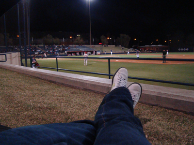

American sports weekend
This weekend my calender said ‘sports’. Unfortunately it was not me who was playing. I was just watching and enjoying the finest of american cuisine (read: hotdog, hamburger, indian fry bread, peanuts, coke, beer, etc.). Well friday night I had a ticket for a friendly mach between Arizona wildcats and Georgia.  The first couple of innings were kind of confusing until I got the idea of the 4 balls, 3 strikes and 3 outs - and after that the game was excellent! It was not hectic, but the waiting-for the good hit (and having a ‘favorite team’ because I was of course cheering for Arizona...did anyone say wannabe?) really paid of when they made a home-run (of which they made two) or made a spectacular catch or run.
The first couple of innings were kind of confusing until I got the idea of the 4 balls, 3 strikes and 3 outs - and after that the game was excellent! It was not hectic, but the waiting-for the good hit (and having a ‘favorite team’ because I was of course cheering for Arizona...did anyone say wannabe?) really paid of when they made a home-run (of which they made two) or made a spectacular catch or run.

Actually I liked it so much that I went to another game today at noon. This time it was the third of the three planned matches against Georgia. Unfortunately Arizona lost both of the games (I guess they are excused since Georgia are #3 in the league), but I still enjoyed it and might go for another mach in the following week - yeah they play quite a lot, but it only costs 6$.
A bit more expensive was the saturday American sport experience... The Tucson Rodeo. I have been quite look since the yearly Tucson Rodeo was this week, and when I heard that I bought a ticket right away -  and It was worth it all!!!! I left before noon yesterday so that I would be there in good time. I took the bike since it was not that far and the weather was (and still is) great. The Rodeo arena/area was sort of similar to a market as wee know it in europe, with people selling all sorts of (cowboy/wild west) things and a lot of greasy food on sale. Well it just makes the feeling right I guess:) Before the actual professional Rodeo started they had a small Junior Rodeo in the arena, meaning 4,5 and 6 years old kids ‘riding’ sheep which was hilarious.
and It was worth it all!!!! I left before noon yesterday so that I would be there in good time. I took the bike since it was not that far and the weather was (and still is) great. The Rodeo arena/area was sort of similar to a market as wee know it in europe, with people selling all sorts of (cowboy/wild west) things and a lot of greasy food on sale. Well it just makes the feeling right I guess:) Before the actual professional Rodeo started they had a small Junior Rodeo in the arena, meaning 4,5 and 6 years old kids ‘riding’ sheep which was hilarious. Furthermore there was the 7-12ish cattle riding and the girls barrel run where a 5 year old girl came in the arena, full speed on a full grown horse and maneuvered it like if she had done it all of her (short) life - that was f****** amazing!!
Furthermore there was the 7-12ish cattle riding and the girls barrel run where a 5 year old girl came in the arena, full speed on a full grown horse and maneuvered it like if she had done it all of her (short) life - that was f****** amazing!!
When the junior stuff was over the ‘real’ cowboys took over. There were like 7 different competitions: Bare back and saddle back horse riding, lassoing cattle alone or in teams of two, ‘cattle wrestling’, barrel runs and last but definitely not least the bull riding. I’ve put a video here to give an idea of the show - because it really was a show!
Before I went there I was a bit sceptic about the animal-wellness.  But going made me realize that it is actually not that bad (it should for sure not be compared with the awful spanish bullfighting), even though I still don’t like the idea of squeezing the genitals to make the animals buck. But still these animals have a MUCH better life than for instance meat or milk cattle!! ...speaking about meet (yes I know I write a lot about food - but I like food, okay!) I tried a real american cheeseburger at the rodeo. I asked for a hamburger and the waitress asked if
But going made me realize that it is actually not that bad (it should for sure not be compared with the awful spanish bullfighting), even though I still don’t like the idea of squeezing the genitals to make the animals buck. But still these animals have a MUCH better life than for instance meat or milk cattle!! ...speaking about meet (yes I know I write a lot about food - but I like food, okay!) I tried a real american cheeseburger at the rodeo. I asked for a hamburger and the waitress asked if  I wanted cheese on it. I said that I wouldn’t mind some cheese and was expecting them to put a _piece_ of cheese on the hamburger - but now! She took the hamburger (which is only bun and meat here) opened it and literally poured 2-3 dl liquid cheese over the meet... here you go sir! Thank you ma’am. It was sooooo greasy, but sad to say actually tasted good after a day of (watching) horse and bull riding.
I wanted cheese on it. I said that I wouldn’t mind some cheese and was expecting them to put a _piece_ of cheese on the hamburger - but now! She took the hamburger (which is only bun and meat here) opened it and literally poured 2-3 dl liquid cheese over the meet... here you go sir! Thank you ma’am. It was sooooo greasy, but sad to say actually tasted good after a day of (watching) horse and bull riding.
So that sort of sums up my weekend of american sport and fine cuisine. 
I’m not finished with the sport yet though. Thursday (the night before I’m flying back to Germany) I’m going to a basketball game between UofA and California. It was not cheap but I think I got a good seat and I am REALLY looking forward to see a high level baske t game live.
t game live. I hope the stadium is filled of shouting enthusiastic fans - I’m excited :)
I hope the stadium is filled of shouting enthusiastic fans - I’m excited :)
Well next time I write here I’ll probably be back in Germany... but you never know.
Thumbs up for American sport!
Oh by the way... just wanted to show you the view from my ‘office’ over here:

Bats & Bulls
Monday, 2 March 2009
